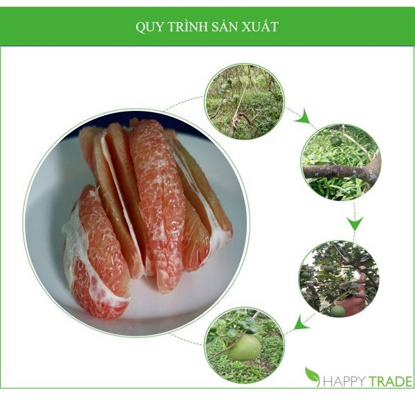
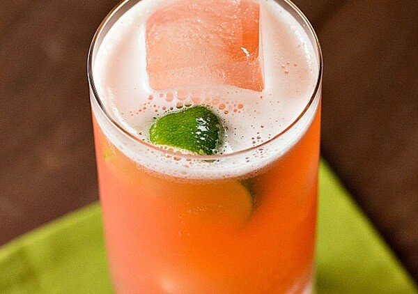
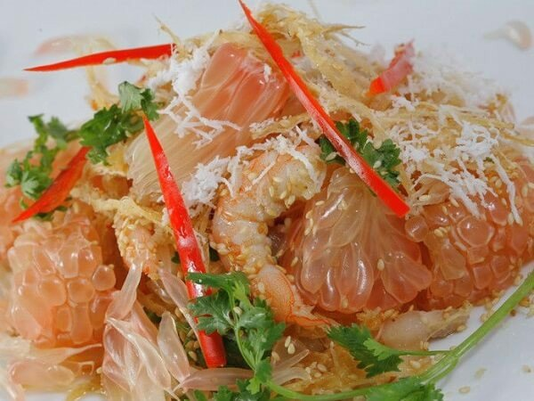

Bưởi da xanh ruột hồng hướng hữu cơ là đặc sản của tỉnh Bến Tre, đây là loại trái cây có vỏ màu xanh đến hơi vàng khi chín, tép bưởi có màu hồng đậm và mọng nước, vị ngọt không chua, mùi thơm nhẹ. Bưởi da xanh có màu sắc bắt mắt, đặc biệt hơn là bưởi da xanh chứa nhiều chất dinh dưỡng tốt cho sức khỏe.
Bưởi da xanh hướng hữu cơ có lợi ích gì
-Tăng sức đề kháng
Bưởi da xanh có chứa lượng vitamin C dồi dào giúp tăng sức đề kháng cho cơ thể, giảm bệnh ung thư hay đột quỵ. Nếu ăn bưởi da xanh thường xuyên sẽ giúp cơ thể tái tạo một nguồn năng lượng mới, hồi phục sức khỏe.
-Giảm cân
Ăn bưởi thường xuyên sẽ giúp tăng tốc độ trao đổi chất, rất phù hợp cho những người giảm cân. Bưởi da xanh là một trong những loại quả thích hợp để giảm cân, không chỉ ngon mà còn có tác dụng trong việc bảo vệ vóc dáng. Bưởi da xanh còn có thể trở thành một thức uống tuyệt vời cho những tín đồ giảm cân.
-Thanh lọc cơ thể
Các chất dinh dưỡng trong bưởi sẽ giúp gan làm sạch những độc tố khỏi cơ thể. Không chỉ xóa tan những cơn mệt mỏi mà ăn bưởi da xanh còn giúp cơ thể được thanh mát, dễ chịu.
-Làm đẹp
Bưởi da xanh hướng hữu cơ chứa lượng vitamin A, vitamin C cao chống oxy hóa, duy trì độ ẩm trong da, bảo vệ da không bị khô và nếp nhăn. Chất chống oxy hóa là một trong những “giải pháp vàng” giúp các chị em thoát khỏi cơn ác mộng của làn da nhăn, sậm màu.
-Ngăn ngừa bệnh
Ăn bưởi cũng có tác dụng ngăn ngừa bệnh ung thư phổi, ngăn ngừa sỏi thận, giảm các cholesterol có hại cho cơ thể.
-Quy trình sản xuất:
Bưởi da xanh Bến Tre được trồng theo phương pháp hữu cơ, thuận tự nhiên, không phân hóa học, không thuốc trừ sâu. Vì vậy trong vườn bưởi được nuôi rất nhiều kiến vàng, kiến vàng lính canh cẩn mật tiêu diệt rệp sáp, rầy… Đồng thời sử dụng các giải pháp sinh thái để hạn chế dịch bệnh như trồng xen canh, sống hòa bình với cỏ dại.

-Nước ép bưởi da xanh
Bưởi da xanh ruột hồng hướng hữu cơ khi ép sẽ cho ra loại nước có mùi thơm nhẹ, vị ngọt đặc trưng nhưng không gây ngán, thích hợp giải khát và bổ sung dưỡng chất, thanh lọc cơ thể.

Nước ép bưởi da xanh ruột hồng. Nguồn: Internet
-Gỏi bưởi da xanh tôm thịt
Bưởi da xanh dùng làm gỏi tôm thịt sẽ cung cấp nhiều chất dinh dưỡng cũng như tạo nên một món ăn lạ miệng, thơm ngon.

Gỏi bưởi da xanh ruột hồng. Nguồn: Internet
-Thông tin nhà cung cấp:
AnFoods là nhà cung cấp với đội ngũ những người trẻ tâm huyết quyết tâm giữ rừng ngập mặn. Song song với đó nuôi trồng những sản phẩm thuần tự nhiên, không có bất cứ chất hóa học hay can thiệp bằng phương pháp nào ảnh hưởng đến môi trường. Những sản phẩm của AnFoods đảm bảo chất lượng, được chứng nhận sản phẩm sạch, an toàn và thân thiện với người dùng. Sản phẩm cung cấp tới tay người tiêu dùng được kiểm tra, khai thác và chế biến tự nhiên.